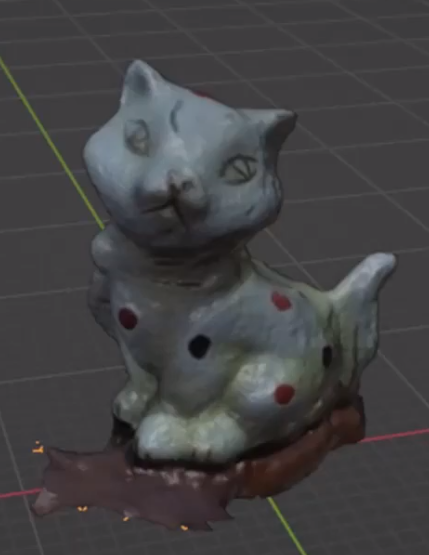

Lenguajes de Programación Conocidos
- R básico
- Python
- JS básico
- CSS
- HTML
Idiomas
Español
Inglés
Proyectos
Creación y modelamiento de objetos 3D
 Ver vídeoModelamiento 3D y extracción de características
Ver vídeoHobbies

Jugar videojuegos
Un gusto inexplicable
Desde una edad temprana, mi pasión por la tecnología se manifestó a través de mi dedicación a los videojuegos,
en particular, el PlayStation 2, donde pasaba horas disfrutando de clásicos (según mi opinión) como GOW2, Medal of Honor, PES11 y FIFA14,
así como juegos de máquina como el KOF 2002 y Street Fighter, entre otros. Los videojuegos siempre me han fascinado y
los veo como una experiencia inmersiva que me permite desconectar de las responsabilidades y relajarme. Alrededor de los 12 o 13 años,
pasaba más de 10 o 12 horas jugando videojuegos en línea, destacando títulos como World of Warcraft y League of Legends, que todavía
juego aunque no con la misma dedicación que antes.
Mi vida diaria
Algo rutinario
El pasar varias horas frente a una pantalla hizo que me acostrumbara a eso, actualmente cuando no tengo clases presenciales y no salgo con amigos o familia,
paso casi todo el día frente de una pantalla. Durante todo el tiempo que estoy frente a mi computador, no me llego a aburrir, me entretengo bastante con diferente
contenido en línea y con clases (cuando asignan virtuales). En la época de pandemia no me llegué a ver tan afectado al ritmo requerido para atender la educación virutal,
en lo personal me logró ayudar a reestructurar mejor mi tiempo junto con aprender a optimizar el tiempo. De modo general, el estar frente a un computador es algo que disfruto.

Diferentes gustos
Un poco de todo
Disfruto viendo deportes internacionales, especialmente las ligas en los fines de semana cuando tengo tiempo,
como la UCL o UEL. Aunque no practico deportes de manera profesional, aprendí a jugar baloncesto en mi barrio
y es una de mis actividades favoritas, aunque no he tenido la oportunidad de jugar recientemente debido a la
falta de encuentros. En cuanto a la música, tengo gustos variados y mi elección depende de mi estado de ánimo,
pero generalmente disfruto escuchando Eurobeat, relacionado con el anime de Initial D. Además, soy un fanático
del contenido animado, incluyendo anime y dibujos animados, ya que encuentro que estas historias me distraen
y me mantienen interesado en seguir viéndolas debido a sus tramas atractivas.
Página web para compartir
Una gran variedad de contenido
Hace unos años, la plataforma Twitch se volvió viral, y yo empecé a explorar distintos tipos de contenido en 2013.
Un día, comencé a buscar contenido relacionado con el juego League of Legends y encontré principalmente streamers que hablaban en inglés.
Me cautivó la forma en que estos streamers interactuaban con sus espectadores a través del chat y mensajes de voz, lo que creaba una atmósfera atractiva.
Sin darme cuenta, pasaba muchas horas viendo a estos creadores de contenido. Utilizar esta plataforma y ver a streamers en inglés me despertó un gran interés
por comprender lo que decían y entender por qué la gente reaccionaba de cierta manera. Este interés me motivó a aprender inglés por pura satisfacción personal.
En mi opinión, Twitch ofrece una amplia gama de contenido, tanto positivo como negativo, pero en todos los casos, la recomendaría como una forma entretenida de pasar el tiempo.